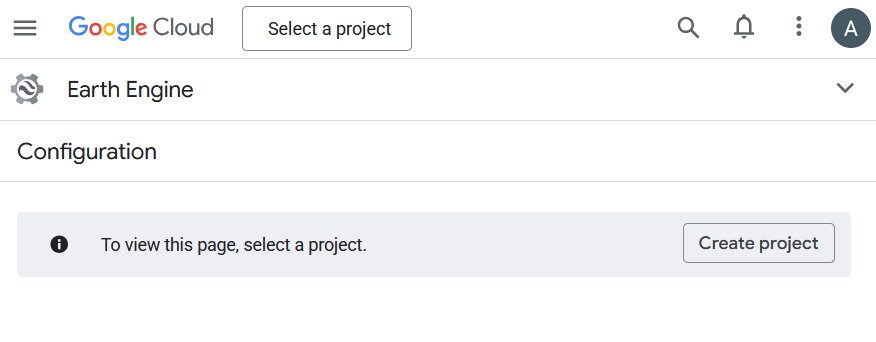
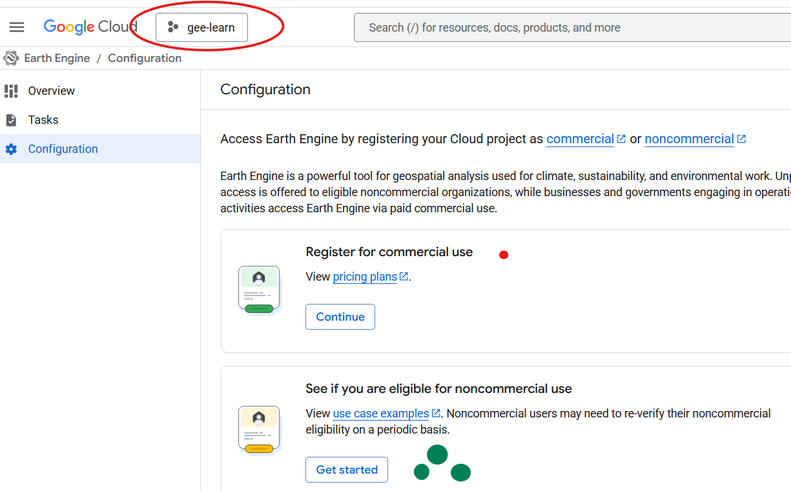
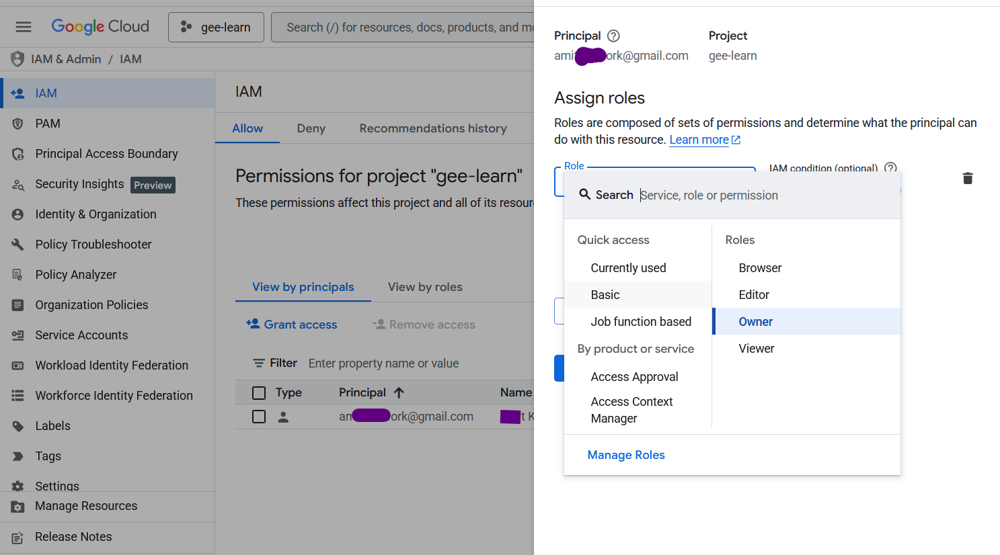
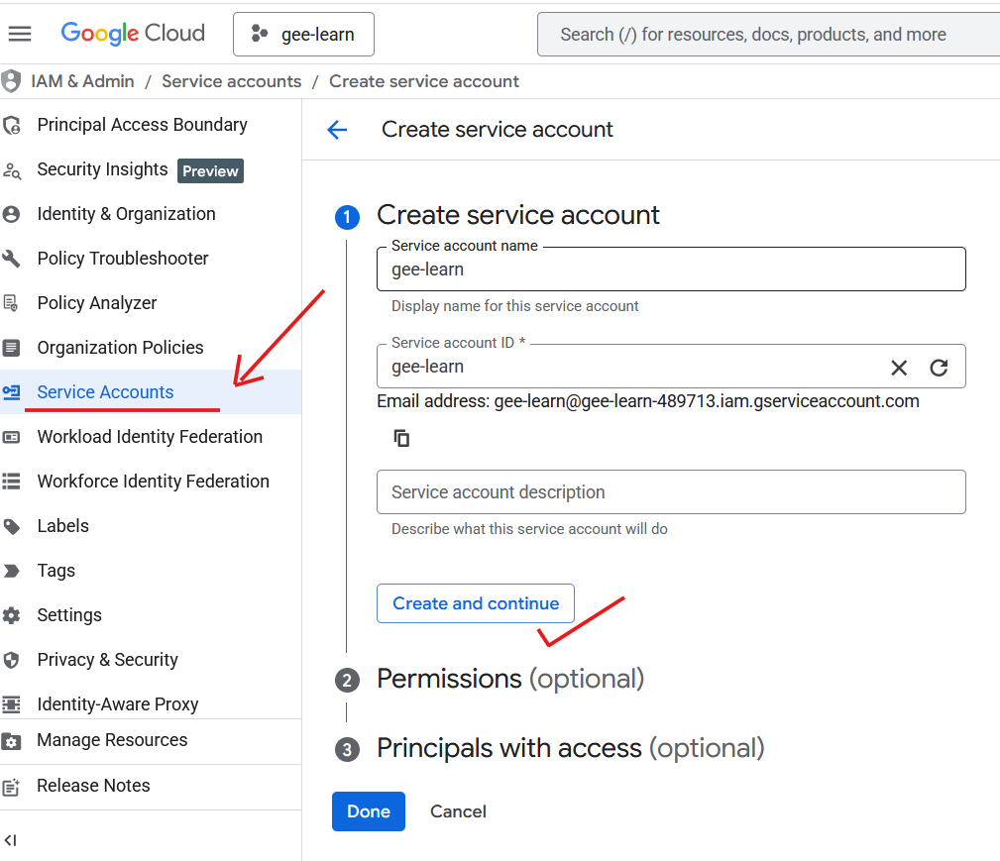
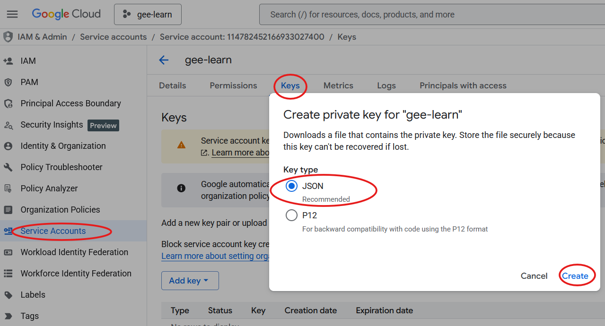
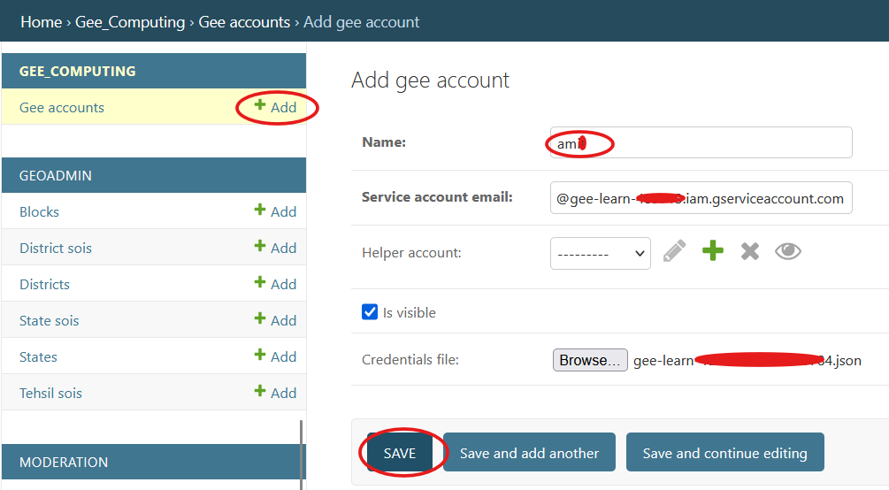

Google Earth Engine¶
Google Earth Engine is not an optional edge integration in the current CoRE Stack backend.
Most computing pipelines, several authenticated compute APIs, and some publication flows depend on a valid backend-side GEEAccount.
If you see gee_account_id in pipeline docs, API examples, or direct Python calls, it refers to a Django GEEAccount record backed by a Google Cloud service account that has Earth Engine access.
Warning
For the current backend, you should assume GEE setup is required before trying to run most computing pipelines end-to-end. Without it, many local and queued compute paths will fail during ee_initialize(...).
What You Need Before Running GEE-Backed Pipelines¶
Set up these pieces in order:
- a Google Cloud project with Earth Engine enabled
- a service account with the required Earth Engine permissions
- a downloaded JSON key for that service account
- write access for that same service account to the Google Cloud Storage bucket used by the backend
- a Django
GEEAccountentry, usually created through the installer or admin - a usable
gee_account_idfor API calls, Celery tasks, and shell runs
Step 1: Configure Google Cloud For Earth Engine¶
- Go to the Google Cloud Earth Engine configuration page:
https://console.cloud.google.com/earth-engine/configuration - Create a new Google Cloud project, or select an existing one.

- Register that project for Earth Engine use.

- Review IAM permissions and make sure the account you are using can manage the project and service accounts.

- Create a service account in that project.

- Create a JSON key for that service account and download it.

The downloaded file will look something like <project-name>-12345-356644b54.json.
Warning
Save the JSON key securely. It grants access to your cloud resources. Do not commit it to git, do not place it under docs/, and do not share it in issues or chat logs.
Step 2: Import The Credentials Into The Backend¶
Option A: Let The Installer Do It¶
This is now the fastest and most aligned path.
Run the installer with the JSON path:
You can also use the generic input style:
bash installation/install.sh --from gee_configuration --input gee_json=/full/path/to/service-account.json
What the current installer does during gee_configuration:
- stages the JSON file into
data/gee_confs/ - creates or updates a Django
GEEAccount - sets
GEE_DEFAULT_ACCOUNT_IDandGEE_HELPER_ACCOUNT_IDinnrm_app/.env - sets the key-path variables such as
GEE_SERVICE_ACCOUNT_KEY_PATH - marks later validation as GEE-required so the initialization test fails fast on missing GEE readiness
Option B: Create The GEEAccount In Django Admin¶
Use this path if you skipped the installer GEE step or want to inspect the account manually.
- Open the Django admin add form for GEE accounts:
http://127.0.0.1:8000/admin/gee_computing/geeaccount/add/ - Fill in:
- Name: a recognizable label such as
productionorlocal-gee-account - Service Account Email: the email from the JSON key, such as
name@project-id.iam.gserviceaccount.com - Helper Account: leave blank unless you already know you need another stored helper account
- Is Visible: usually enabled
- Credentials File: upload the downloaded service account JSON key

- Save the record.
- After creation, copy the numeric account ID from the URL.
- Example URL:
http://127.0.0.1:8000/admin/gee_computing/geeaccount/21/change/ - In this case, the
gee_account_idis21
If you use the admin path instead of the installer path, also make sure nrm_app/.env points to the correct default IDs when your workflow relies on default account lookup:
GEE_DEFAULT_ACCOUNT_IDGEE_HELPER_ACCOUNT_ID
Step 3: Verify GEE And GCS Readiness¶
The current backend validation is stricter than just “can Earth Engine authenticate”.
computing/misc/internal_api_initialisation_test.py checks:
GEE_DEFAULT_ACCOUNT_IDandGEE_HELPER_ACCOUNT_ID- Earth Engine authentication through
probe_gee_connection(...) - Google Cloud Storage upload access through
probe_gcs_upload_access(...) - the first authenticated computing API once GEE, GCS, GeoServer, and admin-boundary data are all ready
Rerun it explicitly when you want a GEE-focused answer:
source "$HOME/miniconda3/etc/profile.d/conda.sh"
conda activate corestackenv
cd /path/to/core-stack-backend
python computing/misc/internal_api_initialisation_test.py --require-gee
Interpret the most important result names like this:
gee-probe: Earth Engine authentication succeeded or failedgcs-upload-probe: the same service account could or could not write to the configured GCS bucketfirst-computing-api: the backend could or could not executePOST /api/v1/generate_block_layer/with GEE in Celery eager modesetup-next-step: the exact next fix the script thinks you should make
If gcs-upload-probe fails, Earth Engine auth alone is not enough. The current first computing API uploads shapefile parts to Google Cloud Storage before importing them into Earth Engine.
Step 4: Use gee_account_id When Running Pipelines¶
Once the Django record exists, the ID becomes part of normal compute execution.
Example API body:
Example direct Python usage:
You will see this parameter throughout the docs because many handlers pass the GEE credential context into Celery-backed pipeline code.
Note
Some backend paths can fall back to GEE_DEFAULT_ACCOUNT_ID, but explicit gee_account_id values are still the safest choice when you are manually testing a pipeline or API route.
Where GEE Is Wired In The Backend¶
The main helper module is:
Key responsibilities there:
- initialize Earth Engine from stored credentials
- initialize Google Cloud Storage access
- validate and build asset paths
- poll task status
- create asset folders
Many compute handlers accept a gee_account_id parameter and pass it into Celery-backed pipeline tasks.
Examples:
- hydrology handlers in computing/api.py
- LULC handlers in computing/api.py
- SWB handler in computing/api.py
The public API also uses Earth Engine for spatial lookups:
- admin lookup by coordinates in public_api/views.py
- report and MWS lookup helpers in public_api/views.py